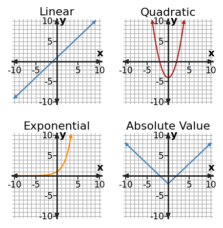

The way values change reveals the family.
Section Introduction
Look at how the change changes
Function families are groups of relationships with recognizable patterns. Linear relationships have a constant rate of change. Quadratic patterns bend because their first differences change in a regular way. Exponential patterns repeatedly multiply by the same factor, and absolute-value graphs form a V-shaped pattern.
No single clue should be used blindly. A table, graph, equation, and context can each provide evidence. Strong classification explains why the evidence fits one family better than the alternatives.
Do not stop at the shape—look for change evidence that explains the shape.
Vocabulary / Key Notation Preview
linear · quadratic · exponential · absolute value · function family
Sort the vocabulary. Write each vocabulary word in the column that best matches what you know right now. You may move a word later.
| Know for sure | Recognize | Don't know yet |
|---|---|---|
Section Preview
Skim before close reading. Look at the headings, tables, graphs, and examples. Find 1–2 things you notice and 1–2 things you wonder about.
| What I noticed | |
|---|---|
| What I wonder |
Close Reading Directions
READ IN SHORT CHUNKS. Annotate the words and visuals together. Underline evidence, circle or highlight bold vocabulary, label arrows or important features, connect sentences to tables and graphs, and jot short questions or connections in the margins. Use these directions through the What's To Come section and the reading that follows.
What's To Come
PREVIEW / DECOMPOSE. Use the connected parts to see where this section is headed. Annotate the representations and prompts as you work.
Use the shared table for every part.
| x | y |
|---|---|
| 0 | 3 |
| 1 | 6 |
| 2 | 12 |
| 3 | 24 |
Part (a)
Compute useful change evidence between consecutive output values.
Part (b)
Use your evidence from part (a) to choose the most likely family: linear, quadratic, exponential, or absolute value.
Part (c)
Use the family pattern from part (b) to predict the output when x=4.
Part (d)
Explain why the family choice from part (b) is consistent with your prediction in part (c).
I Can 1Recognize a linear pattern from constant rate.
A linear pattern has a constant rate of change. When inputs increase by equal amounts, the outputs change by equal amounts. In a table with input steps of 1, that means the first differences in the outputs are constant.
On a graph, constant rate appears as a straight line. In an equation such as y = mx + b, the coefficient m represents that constant rate.
Table
| x | y |
|---|---|
| 0 | 5 |
| 1 | 8 |
| 2 | 11 |
Differences: +3, +3
Equation
y = 3x + 5
Rate = 3
Graph clue
A straight line has the same rise/run rate throughout.
Context clue
“Adds 3 each hour” describes a constant rate.
Equal input steps + equal output changes are strong evidence of a linear pattern.
Example 1: Check constant rate
For x = 0,1,2,3, a table has y = 7,11,15,19. Is the pattern linear? State the rate evidence.
| x | y |
|---|---|
| 0 | 7 |
| 1 | 11 |
| 2 | 15 |
| 3 | 19 |
You Try It 1: Use unequal input steps
A table has points (0,2), (2,8), and (5,17). Show whether the rate is constant.
| x | y |
|---|---|
| 0 | 2 |
| 2 | 8 |
| 5 | 17 |
Stop and Discuss
- Why must you account for the input step size when finding rate from a table?
- What would one inconsistent rate tell you about a supposedly linear relationship?
I Can 2Notice basic quadratic, exponential, and absolute-value shapes or patterns.
Different function families have different signatures. Quadratic graphs often form a U-shaped or upside-down U-shaped curve, exponential relationships repeatedly multiply over equal input steps, and absolute-value graphs form a V shape.
The graph is one clue, but tables and equations can confirm the family. For example, a constant multiplier in the outputs suggests exponential behavior, while constant second differences are associated with a quadratic pattern.

| Family | Change clue |
|---|---|
| Linear | constant rate / first difference |
| Quadratic | constant second differences |
| Exponential | constant multiplier for equal input steps |
| Absolute value | V-shape with two linear arms |
Use the family signature as evidence, not as a label to memorize without checking.
Example 2: Identify a multiplier pattern
For x = 0,1,2,3, outputs are 5, 10, 20, 40. Which family is most likely and why?
| x | y |
|---|---|
| 0 | 5 |
| 1 | 10 |
| 2 | 20 |
| 3 | 40 |
You Try It 2: Identify a second-difference pattern
For x = 0,1,2,3, outputs are 1, 4, 9, 16. The first differences are 3,5,7. What feature suggests a quadratic family?
| x | y |
|---|---|
| 0 | 1 |
| 1 | 4 |
| 2 | 9 |
| 3 | 16 |
Stop and Discuss
- How could an exponential table and a quadratic table both show increasing outputs but still be distinguished?
- What graph feature is especially useful for recognizing absolute value?
I Can 3Use a table, graph, equation, or context as evidence.
Evidence can come from any representation, but it must connect directly to the family claim. A table might show constant differences, a graph might show a V shape, an equation might contain a squared variable, or a context might describe repeated percent growth.
When more than one representation is available, use them together. Agreement across representations makes the classification more reliable and can reveal a mistake in one representation.
Table evidence
+6, +6, +6 → linear
Equation evidence
y = x² + 2 → quadratic structure
Graph evidence
V shape → absolute value
Context evidence
“doubles each day” → exponential
Name the representation feature that supports the family, not just the family name.
Example 3: Use equation and context evidence
A population model is P = 200(1.5)^t and the description says the amount is multiplied by 1.5 each time period. What family is supported by both pieces of evidence?
You Try It 3: Use table evidence
A table has outputs 12, 7, 2, -3 for consecutive integer inputs. Identify the family suggested by the table and cite evidence.
| x | y |
|---|---|
| 0 | 12 |
| 1 | 7 |
| 2 | 2 |
| 3 | -3 |
Stop and Discuss
- Which representation would you prefer for spotting a constant multiplier? Why?
- How can two representations help you catch a classification error?
I Can 4Explain why one family is more likely than another.
A strong explanation compares possibilities rather than naming one family without support. If the outputs multiply by 3 for equal input steps, exponential is more likely than linear because a linear pattern would add a constant amount instead.
Use language such as “more likely because...” and point to the exact pattern. This turns classification into reasoning instead of a guess based on a picture.
Evidence
Outputs: 2, 6, 18, 54
Multiplier: ×3 each step
Why not linear?
Differences: +4, +12, +36
The differences are not constant.
Explain both the positive evidence for your choice and, when useful, why a competing family fits less well.
Example 4: Choose between linear and exponential
For consecutive inputs, outputs are 4, 12, 36, 108. Explain why exponential is more likely than linear.
| x | y |
|---|---|
| 0 | 4 |
| 1 | 12 |
| 2 | 36 |
| 3 | 108 |
You Try It 4: Choose between linear and quadratic
Outputs for x=0,1,2,3 are 2,5,10,17. Explain why quadratic is more likely than linear.
| x | y |
|---|---|
| 0 | 2 |
| 1 | 5 |
| 2 | 10 |
| 3 | 17 |
Stop and Discuss
- What does a good “why this family” explanation contain besides the family name?
- When might a graph alone be insufficient evidence to distinguish families?
Vocabulary Reference
| Term | Meaning in this section |
|---|---|
| linear | a family with constant rate of change |
| quadratic | a family whose basic graph is curved like a U and whose tables can have constant second differences |
| exponential | a family with repeated multiplication by a constant factor over equal input steps |
| absolute value | a family whose basic graph has a V shape |
| function family | a group of functions that share a characteristic structure or change pattern |
Section Summary
- Linear relationships have a constant rate of change.
- Quadratic, exponential, and absolute-value families have different change patterns and recognizable graph features.
- Tables, graphs, equations, and contexts can all provide family evidence.
- A strong classification explains why the evidence supports one family more than another.
What I Understand Now
In 2–4 sentences, choose one function family and explain the evidence you would look for in a table, graph, equation, or context to recognize it.
Common Mistakes to Watch
| Mistake | What to remember |
|---|---|
| Classifying only by graph shape. | Use numerical change, an equation, or context evidence when available. |
| Confusing quadratic and exponential growth. | Quadratic patterns have constant second differences; exponential patterns use a constant multiplier over equal input steps. |
| Calling any straight-looking portion linear. | A linear relationship keeps a constant rate across the relationship, not just over one small interval. |